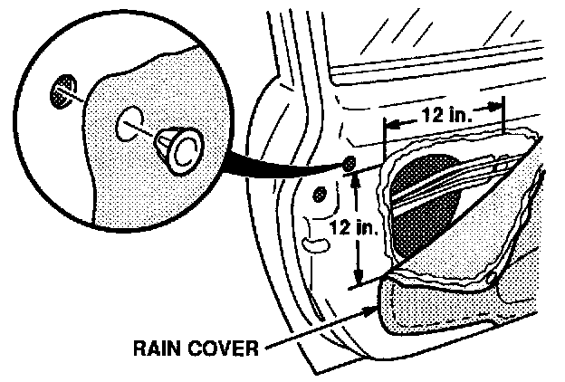
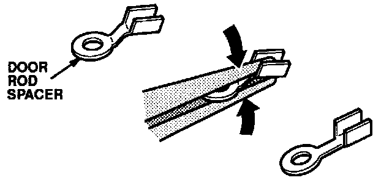
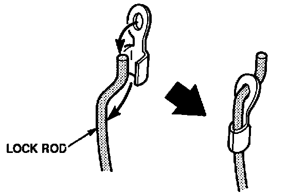
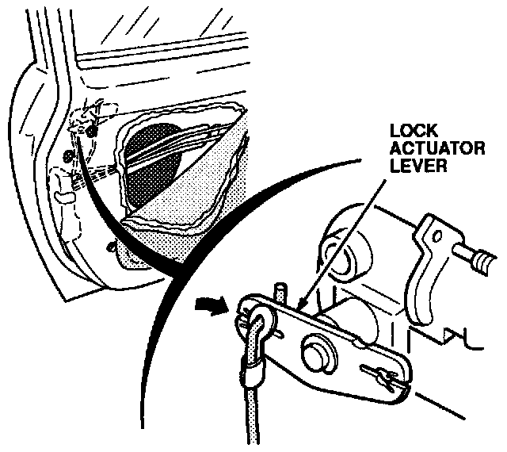
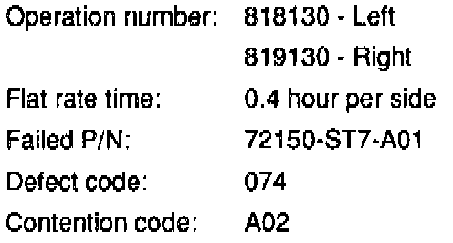

Door Lock - Will Not Operate With Key
August 31, 1993BULLETIN NO.
93-018
YEAR
1994
MODEL
INTEGRA 3-DOOR
VIN APPLICATION
See VEHICLES AFFECTED
Door Will Not Unlock With Key
SYMPTOM
The door will not unlock with the key.
VEHICLES AFFECTED
GS-R: Thru VIN JH4DC2...RS001544
LS, RS: Thru VIN JH4DC4...RS014764
PROBABLE CAUSE
The door lock rod comes off the actuator lever, disabling the door key lock.
CORRECTIVE ACTION
Install the door lock rod with the part listed under PARTS INFORMATION.
1. Remove the handle trim (plastic cap and one screw), and disconnect the connector.
2. Remove the armrest pocket (one screw).
3. Remove the plastic screw and clip from the top front corner of the door panel.
4. Pull on the bottom edge of the door panel to release it from the clips; then, slide the door panel up and back to remove it from the door.
5. Disconnect the mirror and window connectors, and disconnect the speaker connector if applicable. Set the door panel aside.

6. Remove the plastic grommet from the top rear corner of the rain cover. Carefully pull the top rear edge of the rain cover down to the adhesive line. Using a single-edge razor to cut through the adhesive, peel the rain cover back about 12 inches both horizontally and vertically.

7. Using a pair of long needle-nose pliers, straighten the bend in the door rod spacer as shown.

8. Install the straightened door rod spacer on the lock rod. Bend the tabs of the spacer around the lock rod.

9. Snap the lock rod into the lock actuator lever, and check the door lock for proper operation with the key.
10. Reinstall the rain cover and the plastic grommet.
11. Install the door panel in reverse order of removal.
PARTS INFORMATION
Door Rod Spacer: P/N 72110-ST7-999

WARRANTY CLAIM INFORMATION
In warranty:
The normal warranty applies.
Out of warranty:
Any repair performed after warranty expiration may be eligible for goodwill consideration by the District Service Manager or your Zone Office. You must request consideration, and get a decision, before starting work.

Disclaimer